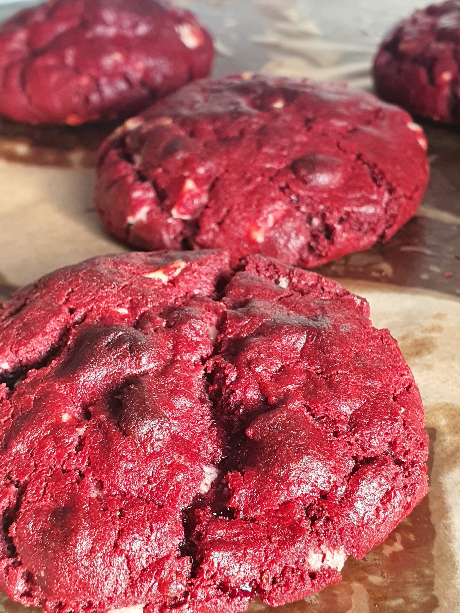
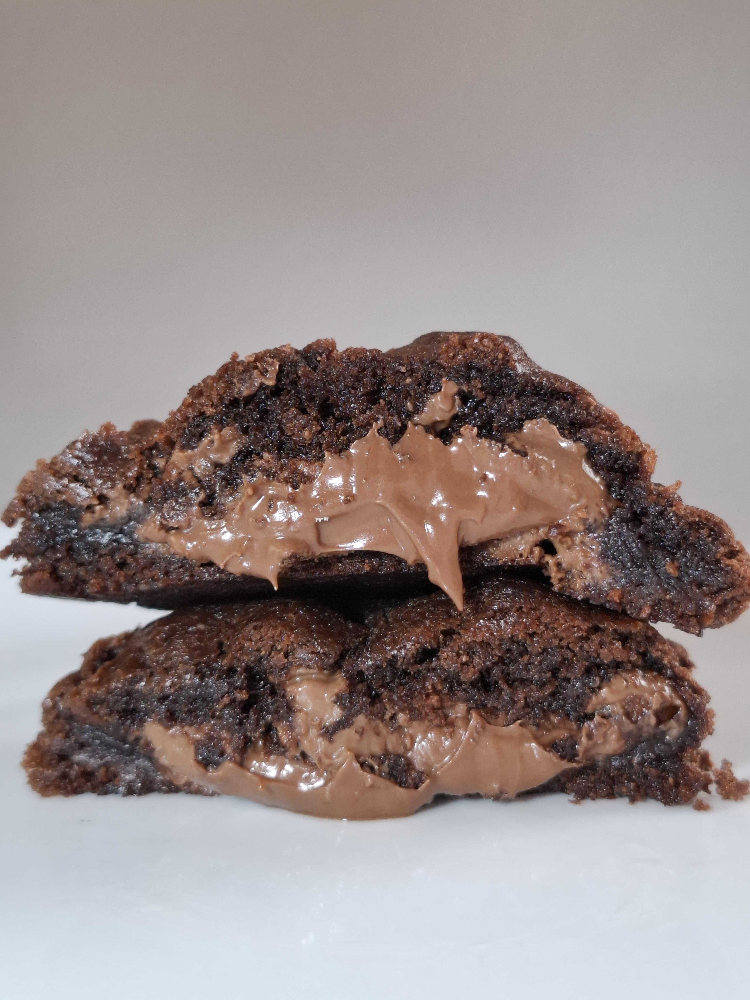
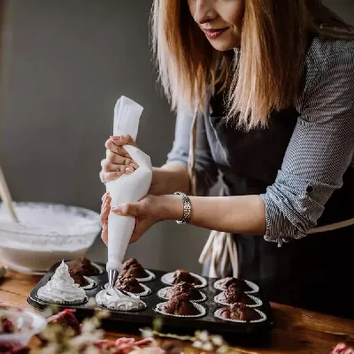
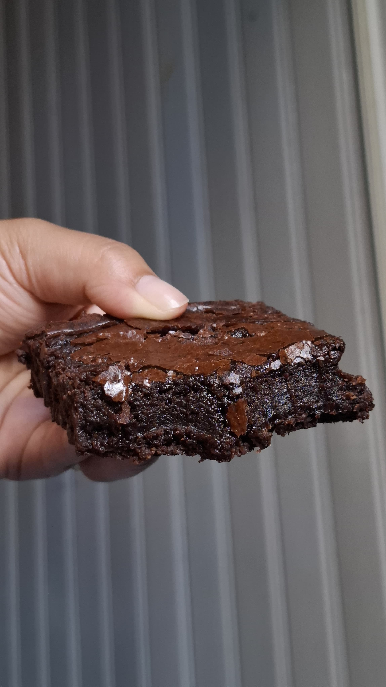
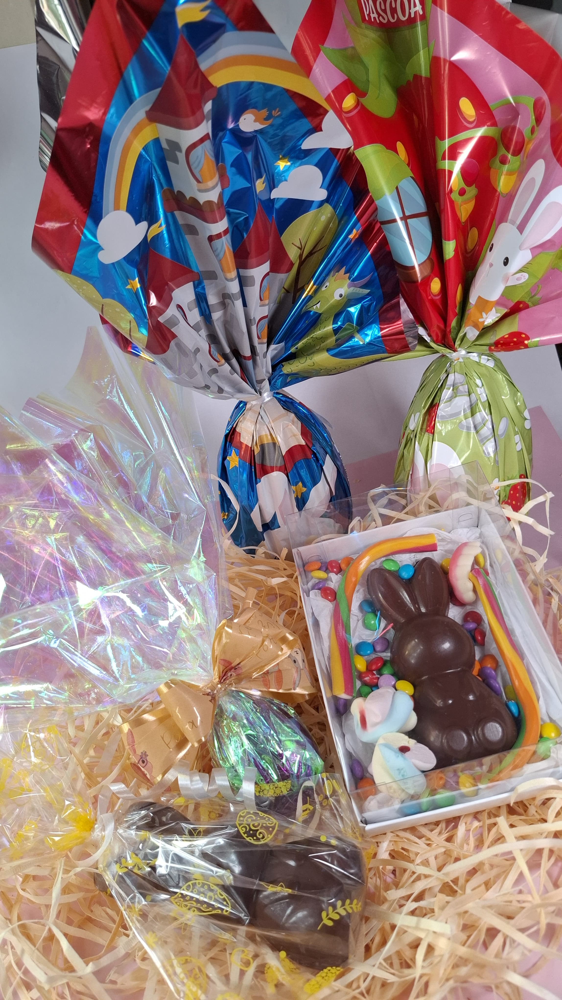

Cookies
Cookies artesanais preparados com ingredientes selecionados
Uma experiência única em cada sabor, preparada com carinho e cuidado em cada detalhe.
Conheça nossos produtos

A NIBS nasceu de uma paixão pela confeitaria e de um amor que atravessa gerações.
O que começou como um hobby, feito com carinho e dedicação, ganhou propósito e se transformou em uma marca que tem no afeto a sua principal inspiração. Vitória, filha da idealizadora, tornou-se o símbolo da NIBS, representando aquilo que está presente em cada criação: cuidado, carinho, memória e amor.
Cada doce é preparado com atenção aos detalhes, ingredientes selecionados e o cuidado artesanal que torna cada experiência especial.
Na NIBS, acreditamos que sabores também contam histórias. Por isso, buscamos transformar cada pedido em um momento único — seja para celebrar uma ocasião especial, presentear alguém querido ou simplesmente tornar o dia mais doce.
NIBS. Feita com carinho. Criada para criar memórias.
Conheça algumas de nossas criações preparadas artesanalmente.

Cookies artesanais preparados com ingredientes selecionados

Brownies preparados artesanalmente com textura intensa e sabor marcante.

Ovos de Páscoa preparados artesanalmente com produtos de qualidade e sabores irresistiveis.